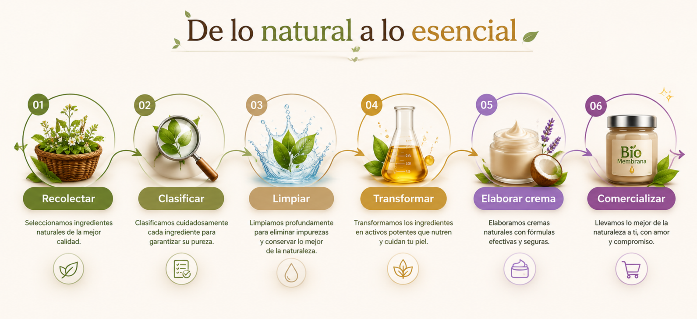

BIO-Membrana
Cosmética Natural
| Inicio |
| Acerca de |
| Productos |
| Contacto |
Síguenos en:


|
Nuestra Historia BIO-Membrana nace en la provincia de Cañete con el propósito de revolucionar la cosmética a través de la economía circular. Identificamos la constante acumulación de cáscaras de huevo en mercados y restaurantes locales, un residuo orgánico que habitualmente genera contaminación. Nuestra propuesta de valor transforma este residuo en un bio-ingrediente de alto rendimiento. Mediante procesos artesanales y sostenibles, recuperamos la membrana interna del huevo —rica en colágeno, elastina y ácido hialurónico— y la combinamos con vitamina E, aceite de coco, sábila y miel para crear una crema hidratante regeneradora que cuida tu piel mientras reduce la huella ecológica. |
||||
|
||||
De lo Natural a lo Esencial: Ingredientes Clave
|
||||
|
Proceso de Elaboración |
||||
|
 |
||||
|
Compromiso Ecológico e Impacto Local Nuestro modelo de logística inversa abarca desde la recolección limpia en puntos locales hasta el envasado en frascos de vidrio reutilizables. Al elegir BIO-Membrana, apoyas la reducción de residuos orgánicos, impulsas la economía circular en Cañete y optas por un cuidado facial ético, libre de crueldad y respetuoso con el medio ambiente. |